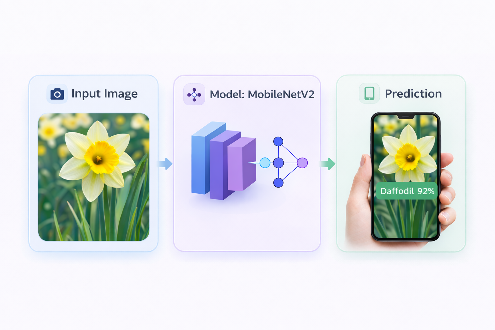

81.10% Accuracy • 102 Classes • MobileNetV2 • Lightweight Model
Transfer learning approach for efficient multi-class image classification

Built an image classification system to recognize 102 flower species using transfer learning with MobileNetV2. Starting from a limited dataset, the model was adapted to learn meaningful visual features and make reliable predictions on unseen images.
The focus was to balance performance and efficiency, using a lightweight architecture suitable for real-world applications.
Leveraged a pretrained MobileNetV2 model by replacing the final classification layer. Feature extraction layers were frozen while training a custom classifier, enabling efficient learning with limited data.
Achieved 81.10% test accuracy, demonstrating strong generalization on unseen data. The model performs confidently across most classes, with opportunities for further improvement through fine-tuning and data augmentation.